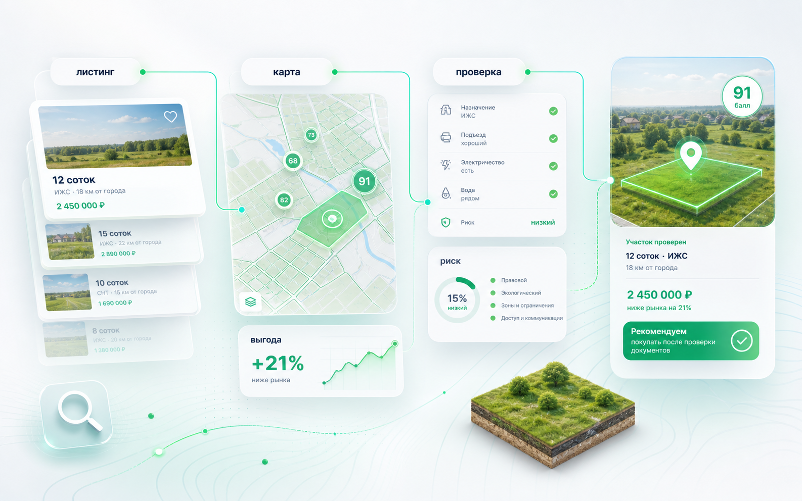

Ликвидные зоны
Работаем не по всей карте подряд, а по местам, где есть спрос, розничный покупатель и понятная скорость перепродажи.
Мы работаем только с ликвидными локациями России и ищем участки, которые продаются заметно ниже рынка: из-за большого размера, слабой упаковки объявления или сложностей с документами.
Продукт
Система отбирает предложения в заранее выбранных ликвидных местах, ищет дисконт к рынку и показывает, где можно купить сильно ниже рынка, а затем продать в розницу чуть ниже рынка.
Работаем не по всей карте подряд, а по местам, где есть спрос, розничный покупатель и понятная скорость перепродажи.
Ищем объявления с дисконтом: большие участки, недооцененные карточки, срочные продажи или объекты со сложностями в документах.
Искусственный интеллект оценивает маржу, ликвидность, риски, документы, спрос и вероятность быстрой розничной продажи.
Специалист по продаже земли вместе с AI готовит предложение еще ниже, чтобы увеличить запас маржи до перепродажи.
Сначала находим причину дисконта и считаем, можно ли ее монетизировать после проверки.
Смотрим, за какую цену участок можно продать быстро, оставаясь чуть ниже рынка.
Маржа появляется не от ожидания роста, а от точного входа в ликвидную локацию.
От объявления к земле
Система соединяет маркетплейсы, карту, рыночные цены и полевую проверку. В итоге инвестор видит не просто объявление, а гипотезу: почему объект дешевле, как снизить цену и кому его перепродать.

Собираем объявления, цену, площадь, дату публикации и историю изменений.
Сравниваем окружение, подъезды, спрос, инфраструктуру и конкурентов рядом.
Выдаем короткий вывод: проверять, торговаться, резервировать или исключить.
Инвестиционный профиль
Вместо длинных таблиц система собирает короткий инвестиционный паспорт: цена входа, риск документов, ликвидность места, сценарий розничной перепродажи и следующий шаг для переговоров.
Рекомендация: проверить документы, выйти на продавца и подготовить оффер ниже текущей цены с запасом под розничную перепродажу.
Считаем разницу с рынком и запас после торга.
Проверяем спрос, срок продажи и конкурентов рядом.
Подсвечиваем назначение, доступ, коммуникации и красные флаги.
Считаем розничный выход: продать быстро и чуть ниже рынка.
Доступ к сервису
Оставьте контакты, и мы покажем объекты ниже рынка, AI-скоринг, слабые места документов и рекомендуемую стратегию торга.